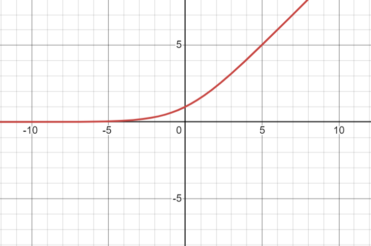
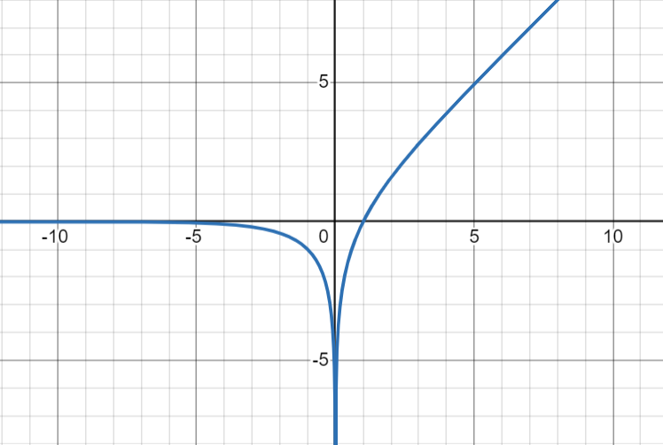
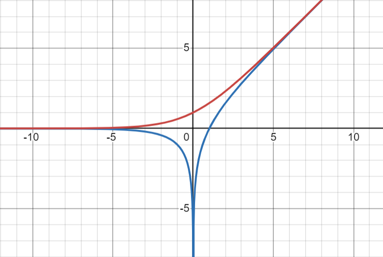

Recognizers in ESP32forth
🧐
November 9, 2024
Motivation
┄────────┄
• Forth is really good at creating
DSLs (Domain Specific Languages).
• Nearly everything can be redefined,
including numbers:
: 42 ." everything" ;
• But...
◦ There's no easy way to add new kinds of numbers.
◦ Strings in Forth have a weird extra space.
◦ There's no way for words to implicitly exist
based on other words.
Forth Recognizers
┄───────────────┄
• Matthias Trute RfD in 2018
• Allow extension of the Forth interpreter
◦ Change what happens while parsing + interpreting
◦ Compose set of "recognizers" of different types
◦ Extend literals, add strings, and more
• I learned about them from Leon Wagner's Forth Day talk
• Homologous to changing colorForth color dispatch
• Available, but not documented in ESP32forth
• Caveat: I'm ignorant of the standards process
Terminology
┄─────────┄
Recognizer = Word given the chance to handle parsing
( a n -- .. rectype )
Recognizer Sequence / Stack = Ordered set of recognizers
[ n xt0 xt1 xt2 ... ]
Recognizer Type = Dispatch table returned by a recognizer
[ xt0 xt1 xt2 ]
Recognizer Types
┄──────────────┄
RECTYPE: ( xt-interpret
xt-compile
xt-postpone
"name" -- )
| STATE @ 2+
|
0 | 1 | 2
─────────┼─────────┼──────────
POSTPONE | COMPILE | INTERPRET
: RECTYPE: ( xt-interpret xt-compile xt-postpone "name" -- ) CREATE , , , ;
: do-notfound ( a n -- ) -1 'notfound @ execute ;
( interpret ) ( compile ) ( postpone )
' do-notfound ' do-notfound ' do-notfound RECTYPE: RECTYPE-NONE
' execute ' , ' postpone, RECTYPE: RECTYPE-WORD
' execute ' execute ' , RECTYPE: RECTYPE-IMM
' drop ' execute ' execute RECTYPE: RECTYPE-NUM
: RECOGNIZE ( c-addr len addr1 -- i*x addr2 )
dup @ for aft
cell+ 3dup >r >r >r @ execute
dup RECTYPE-NONE <> if rdrop rdrop rdrop rdrop exit then
drop r> r> r>
then next
drop RECTYPE-NONE
;
Recognizer Stacks/Sequences
┄─────────────────────────┄
RECSTACK ( -- a )
+RECOGNIZER ( xt -- )
-RECOGNIZER ( -- )
GET-RECOGNIZERS ( -- xtn..xt1 n )
SET-RECOGNIZERS ( xtn..xt1 n -- )
Extra Challenge!
┄──────────────┄
• Implement recognizers during ESP32forth bootstrap
• Make 0, 1, -1 built-in words
• Make NL (10) and BL (32) built-in words
• Avoid other numbers until we have recognizers!
create RECSTACK 0 , BL 2/ ( 16 ) cells allot
: +RECOGNIZER ( xt -- )
1 RECSTACK +! RECSTACK dup @ cells + ! ;
: -RECOGNIZER ( -- ) -1 RECSTACK +! ;
: GET-RECOGNIZERS ( -- xtn..xt1 n )
RECSTACK @ for RECSTACK r@ cells + @ next ;
: SET-RECOGNIZERS ( xtn..xt1 n -- )
0 RECSTACK ! for aft +RECOGNIZER then next ;
: postpone ( "name" -- )
bl parse RECSTACK RECOGNIZE @ execute ; immediate
: +evaluate1
bl parse dup 0= if 2drop exit then
RECSTACK RECOGNIZE state @ 1+ 1+ cells + @ execute
;
: interpret0 begin +evaluate1 again ; interpret0
( Add regular words )
: REC-FIND ( c-addr len -- xt addr1 | addr2 )
find dup if
dup immediate? if RECTYPE-IMM else RECTYPE-WORD then
else
drop RECTYPE-NONE
then
;
' REC-FIND +RECOGNIZER
( Add integers )
: REC-NUM ( c-addr len -- n addr1 | addr2 )
s>number? if
['] aliteral RECTYPE-NUM
else
RECTYPE-NONE
then
;
' REC-NUM +RECOGNIZER
( Add floating point numbers, later )
: REC-FNUM ( c-addr len -- f addr1 | addr2 )
s>float? if
['] afliteral RECTYPE-NUM
else
RECTYPE-NONE
then
;
' REC-FNUM +RECOGNIZER
Effect on ESP32forth
┄──────────────────┄
• PROs:
◦ Allows removing int/float parsing from core
- In theory, can be done in Forth
◦ Allows removing int/float parsing from core
• CONs:
◦ Requires opcodes for 0, 1, -1, NL(10), BL(32) and 41=NL+BL-1
◦ Somewhat complex
PARSE
FIND
CREATE
EVALUATE1
┄───────────────┄
S>FLOAT?
S>NUMBER?
┄──BEFORE───┄
static cell_t *evaluate1(cell_t *rp) {
cell_t call = 0;
cell_t tos, *sp, *ip;
float *fp;
UNPARK;
cell_t name;
cell_t len = parse(' ', &name);
if (len == 0) { DUP; tos = 0; PARK; return rp; } // ignore empty
cell_t xt = find((const char *) name, len);
if (xt) {
if (g_sys->state && !(*TOFLAGS(xt) & IMMEDIATE)) {
COMMA(xt);
} else {
call = xt;
}
} else {
cell_t n;
if (convert((const char *) name, len, g_sys->base, &n)) {
if (g_sys->state) {
COMMA(g_sys->DOLIT_XT);
COMMA(n);
} else {
PUSH n;
}
} else {
float f;
if (fconvert((const char *) name, len, &f)) {
if (g_sys->state) {
COMMA(g_sys->DOFLIT_XT);
*(float *) g_sys->heap++ = f;
} else {
*++fp = f;
}
} else {
PUSH name;
PUSH len;
PUSH -1;
call = g_sys->notfound;
}
}
}
PUSH call;
PARK;
return rp;
}
┄──AFTER───┄
static cell_t *evaluate1(cell_t *rp) {
cell_t call = 0;
cell_t tos, *sp, *ip;
float *fp;
UNPARK;
cell_t name;
cell_t len = parse(' ', &name);
if (len == 0) { DUP; tos = 0; PARK; return rp; } // ignore empty
cell_t xt = find((const char *) name, len);
if (xt) {
if (g_sys->state && !(*TOFLAGS(xt) & IMMEDIATE)) {
COMMA(xt);
} else {
call = xt;
}
} else {
return 0;
}
PUSH call;
PARK;
return rp;
}
Applications
┄──────────┄
• New kinds of literals:
◦ Complex Numbers - 12e9i-43
◦ Rational Numbers - 22/7
◦ Logarithmic Number Systems - ~123
◦ Strings - "No need for a space"
◦ Atoms - 'myname
◦ New base prefixes - b$11010010
• General prefix/suffix:
◦ Store to Values - 123 >myvar
◦ Defining Syntax - square: dup * ;
Complex Numbers
┄─────────────┄
• Add words that treat 2 floats as a complex number
• z+ z- z* z/ etc.
• Introduce literals [real]i[imaginary]
--> 123i100 2i0 z* z.
246.000000i200.000000 ok
--> 123i100 2i1 z+ z.
125.000000i101.000000 ok
--> 123i100 1/z z.
0.004894i-0.003979 ok
: z@ ( a -- z ) dup sf@ sfloat+ sf@ ;
: z! ( a -- z ) dup sfloat+ sf! sf! ;
: z, ( z -- ) fswap sf, sf, ;
: zconstant create z, does> z@ ;
: zvariable create 0i0 z, ;
: f>r r> fp@ ul@ fdrop >r >r ;
: r>f r> r> fdup fp@ l! >r ;
: -frot frot frot ;
: zdup fover fover ;
: zswap f>r fswap f>r fswap r>f r>f fswap f>r fswap r>f ;
: zover f>r f>r zdup r>f r>f zswap ;
: 2zdup zover zover ;
: z. ( z -- ) fswap <# #fs #> type ." i" <# #fs #> type space ;
: z+ ( z z -- z ) f>r fswap f>r f+ r>f r>f f+ ;
: z- ( z z -- z ) f>r fswap f>r f- r>f r>f f- ;
: z* ( z z -- z ) 2zdup -frot f* f>r f* r>f f+ f>r
frot f* f>r f* r>f f- r>f ;
: zlen ( z -- f ) fdup f* fswap fdup f* f+ ;
: 1/z ( z -- z ) zdup zlen fdup f>r fswap f>r
f/ r>f fnegate r>f f/ ;
: z/ ( z z -- z ) 1/z z* ;
: azliteral fswap afliteral afliteral ;
: find-char ( a n ch -- a )
swap for aft over c@ over = if drop rdrop exit then >r 1+ r> then next
2drop 0 ;
: iparts? { a n -- 0 | a n a n -1 }
a n [char] i find-char dup 0= if exit then { m }
m 1+ n 1- m a - -
a m a -
-1
;
: rec-z ( a n -- z addr1 | addr2 )
iparts? 0= if rectype-none exit then
2dup s>number? if s>f 2drop else s>float? 0= if rectype-none exit then then
2dup s>number? if s>f 2drop else s>float? 0= if rectype-none exit then then
['] azliteral rectype-num
;
' rec-z +recognizer
"Easy" Assignment
┄───────────────┄
• Add a syntax for assigning to values.
0 value foo
123 ->foo
• Make sure it works in definitions and postponed.
: bar 55 ->foo ;
: baz postpone ->foo ;
: ->ex execute ;
: ->, >r aliteral r> , ;
: ->post >r aliteral r> postpone aliteral postpone, ;
' ->ex ' ->, ' ->post rectype: rectype-to
: prefix? { a n b m -- 0 | a' n' -1 }
n m 1+ < if 0 exit then
m 0 do a i + c@ b i + c@ <> if 0 unloop exit then loop
a m + n m - -1
;
: rec-> ( a n -- )
s" ->" prefix? 0= if rectype-none exit then
find dup 0= if drop rectype-none exit then
>body ['] ! rectype-to
; ' rec-> +recognizer
: rec+-> ( a n -- )
s" +->" prefix? 0= if rectype-none exit then
find dup 0= if drop rectype-none exit then
>body ['] +! rectype-to
; ' rec+-> +recognizer
Logarithmic Number Systems
┄────────────────────────┄
• Compute on fixed-point logarithms
• Use Gaussian Logarithms for add/subtract
log(x) + log(y) = log(x * y)
log(x) - log(y) = log(x / y)
log(x) * n = log(x ^ n)
Gaussian Logarithms
┄─────────────────┄
log2(x) + S(log2(y) - log2(x)) = log2(x + y)
log2(x) + D(log2(y) - log2(x)) = log2(|x - y|)
S(x) = log2(1 + 2^x)
D(x) = log2(|1 - 2^x|)
@summer.png

@differ.png

@both.png

log2(x) + S(log2(y) - log2(x))
= log2(x) + S(log2(y / x))
= log2(x) + log2(1 + 2^log2(y / x))
= log2(x) + log2(1 + y / x)
= log2(x + y)
LNS vs Floating Point vs Fixed
┄────────────────────────────┄
• LNS uniformly log scale vs tiered
• If you know your range, use fixed-point!
• LNS add/subtract is expensive
◦ Table vs CORDIC
- 89 (4-bit), 2440 (8-bit)
• Most problems have an actual scale
◦ But Audio, Light, Ritcher scale,
are logarithmic
LNS Syntax
┄────────┄
~3.14159
~22 ~7 ~/ CONSTANT PI
~100 ~20 ~3 ~+ ~+ ~.
: ~* ( ~ ~ -- ~ ) + ;
: ~/ ( ~ ~ -- ~ ) - ;
: ~/1 ( ~ -- ~ ) negate ;
: ~>f ( ~ -- f ) 2e s>f ~precision s>f f/ f** ;
: f>~ ( f -- ~ ) fln 2e fln f/ ~precision s>f f* 0.5e f+ floor f>s ;
: ~. ( ~ -- ) ~>f f. ;
: ~summer ( ~ -- ~ ) ~>f 1e f+ f>~ ;
: ~differ ( ~ -- ~ ) 1e ~>f f- fabs f>~ ;
: ~order ( ~ ~ -- ~ ~ ) 2dup max >r min r> ;
0 value entries
: tabulate
begin
entries ~summer ,
entries ~differ ,
1 +to entries
entries ~summer entries =
entries ~differ entries = and if exit then
again
;
create table tabulate
: ~summer1 ( ~ -- ~ ) dup entries < if 2* cells table + @ then ;
: ~differ1 ( ~ -- ~ ) dup entries < if 2* 1+ cells table + @ then ;
: ~+ ( ~ ~ -- ~ ) ~order over - ~summer1 + ;
: ~- ( ~ ~ -- ~ ) ~order over - ~differ1 + ;
0 value result
0 value places
0 value fract
: !digit ( ch -- ) dup [char] 0 < over [char] 9 > or if -1 throw then ;
: =digit ( ch -- )
dup [char] . = if drop -1 to fract exit then
!digit
[char] 0 - to result ;
: +digit ( ch -- )
dup [char] . = if drop -1 to fract exit then
!digit
fract if 1 +to places then
[char] 0 - result 10 * + to result ;
: ~conv ( a n -- )
>r 1+ dup c@ =digit r>
2 - for aft 1+ dup c@ +digit then next
drop
result s>~ 10 places dig ~/
['] aliteral rectype-num
;
: rec-~ ( a n -- )
dup 2 < if 2drop rectype-none exit then
over c@ [char] ~ <> if 2drop rectype-none exit then
0 to fract
0 to result
0 to places
['] ~conv catch if 2drop rectype-none exit then
;
' rec-~ +recognizer
Closing Thoughts
┄──────────────┄
• These kinds of enhancements are nice,
but complex.
• Most highlight the weakness of
out-of-the box string handling.
DEMO &
QUESTIONS❓
🙏
Thank you!
┄────────────────────────┄
http://eforth.appspot.com/